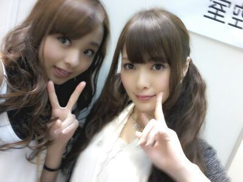

はあい(・∨・)ノ )))
Rotty☆だよぉー.
前回は 選抜発表について
自分の思いを書かせて頂きました.
皆さん, 温かいコメント
本当にありがとうございます.
お家を出る前や
お稽古に向かう電車の中で
ずっとコメントを見ていて
皆の優しさに涙が溢れてきました.
本当にありがとうございます♪
とってもとってもとっても嬉しいです ! !
よしっ(*・∨・*)!
ろってぃ−頑張るん♪
日曜日に横浜で握手会もあるしねん
それを楽しみに
今週もいい意味で自分を
追い込んで頑張らなくっちゃ^ ^
ぴょん♪
タッタターーーン☆ミ

まーいやぁぁぁん♪とっ(*^ ^*)
まいやーーーん ?
可愛すぎますっ!!!
お顔・・・ わぁ〜お キラキラw☆
もう言葉に出きない >┼◯
あ、今お風呂わかしているお。
そして 『塩キャラメルオレ』
を飲みながら三角座りして
わくまでたいき(/・∨・)/
もうお腹ちゃぷんちゃぷん 笑
ぴょん !
明日は お稽古の前に
朝からお仕事 .
明日も皆さん一緒に
頑張りしょうね\(´∨`)/
以上っ ろってぃ−でした!
のし.